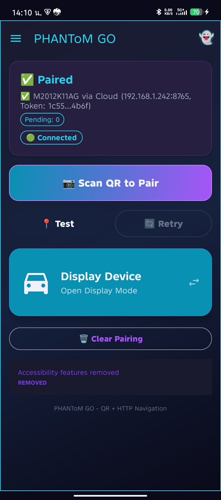
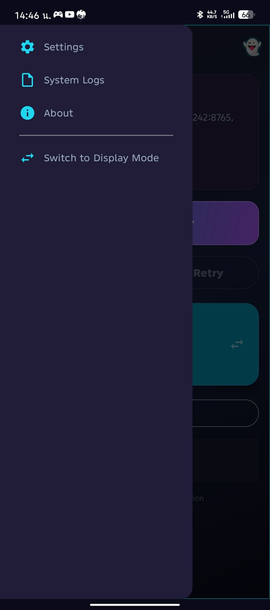
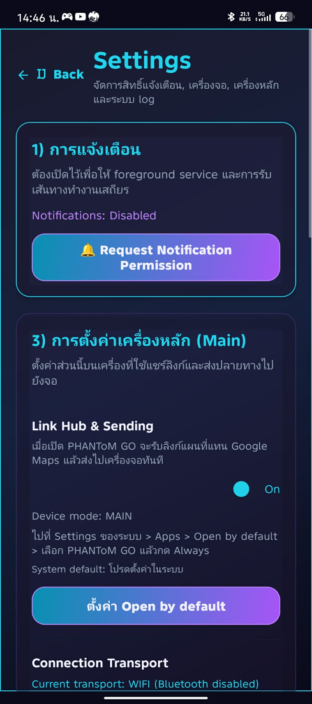
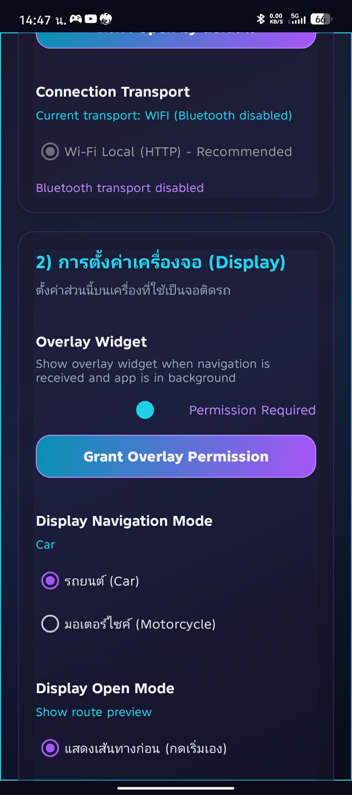
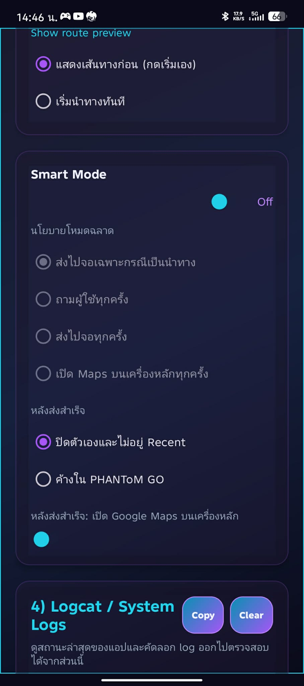
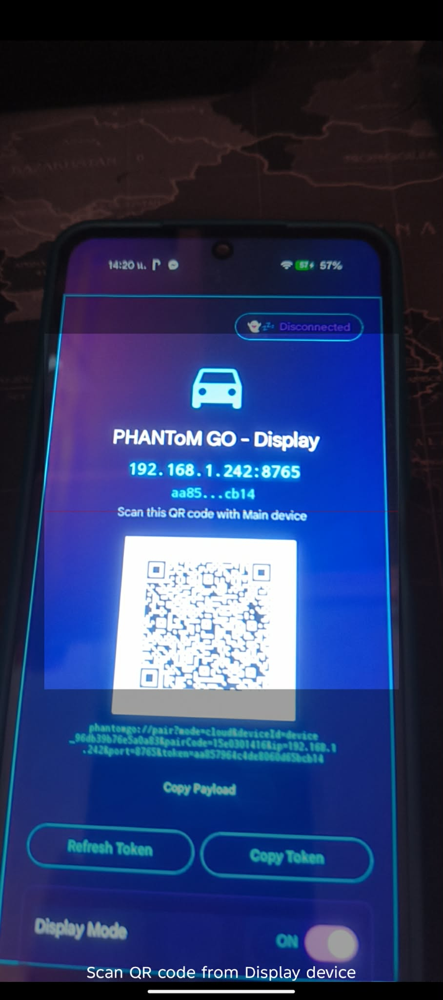
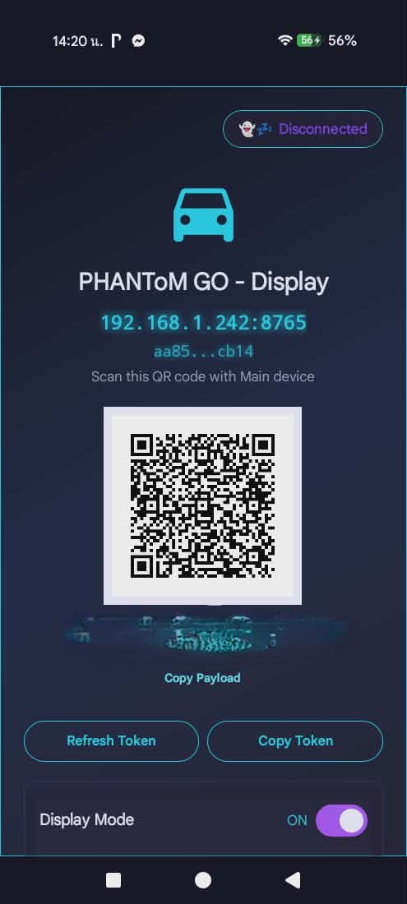
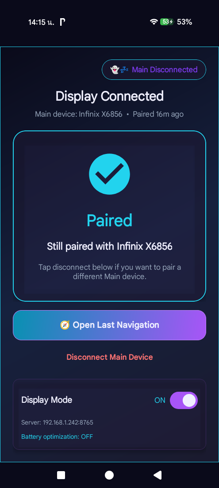

Main Home
เปิดตัวหน้าแอปหลัก
ให้ผู้ชมเห็นสถานะ paired
ปุ่ม Scan QR และการ์ด Display
Narration:
นี่คือ PHANToM GO แอปที่ช่วยส่งปลายทางจากเครื่องหลักไปยังเครื่องจอ
Storyboard Infographic with Real App Screens
Main Device sends Google Maps destinations to a Display Device using QR pairing and cloud delivery

เปิดตัวหน้าแอปหลัก
ให้ผู้ชมเห็นสถานะ paired
ปุ่ม Scan QR และการ์ด Display
นี่คือ PHANToM GO แอปที่ช่วยส่งปลายทางจากเครื่องหลักไปยังเครื่องจอ

โชว์เมนูหลักของแอป
Settings, Logs, About
และทางลัดไป Display Mode
ผู้ใช้สามารถเข้าถึงการตั้งค่าและเครื่องมือสำคัญได้อย่างรวดเร็ว

เริ่มจาก Notification permission
เพื่อให้ระบบ background ทำงานเสถียร
และเริ่มอธิบายการตั้งค่าฝั่งหลัก
เริ่มจากเปิดสิทธิ์แจ้งเตือน เพื่อให้ระบบทำงานได้ต่อเนื่องและเสถียร

แสดงการตั้งค่าฝั่ง Main และ Display
เช่น Link Hub, Transport
และพฤติกรรมการเชื่อมต่อ
ผู้ใช้สามารถปรับค่าฝั่งเครื่องหลักและเครื่องจอได้ในหน้าเดียว

ส่วนการปรับ after-send behavior
การเปิดแผนที่ และ System Logs
เหมาะกับฉากสอนใช้งานละเอียด
ยังสามารถปรับพฤติกรรมหลังส่ง และดู log ของระบบได้ในหน้าเดียว

ฝั่ง Main เปิดหน้าสแกน
แล้วใช้กล้องจับ QR จากเครื่องจอ
เพื่อ pair แบบรวดเร็ว
จากเครื่องหลัก เพียงสแกน QR code การเชื่อมต่อก็เริ่มต้นได้ทันที

เมื่อค้นหาปลายทางแล้ว
กด Share และเลือก PHANToM GO
เพื่อส่ง route ไปยังเครื่องจอ
เมื่อมีปลายทางแล้ว เพียงกดแชร์แล้วเลือก PHANToM GO

ฝั่ง Display พร้อมใช้งาน
และแสดง QR code สำหรับการ pair
ให้เครื่องหลักสแกนได้ทันที
บนเครื่องจอ ให้เปิด Display Mode แล้วแสดง QR code สำหรับการจับคู่

เมื่อ pair สำเร็จ
ฝั่ง Display เปลี่ยนเป็นหน้าพร้อมใช้งาน
และมีปุ่ม Disconnect
เมื่อเชื่อมต่อสำเร็จ เครื่องจอก็พร้อมรับเส้นทางทันที

ปลายทางเปิดบนเครื่องจออัตโนมัติ
เหมาะกับการใช้เครื่องเก่าเป็นจอติดรถ
ขณะเครื่องหลักใช้กดงานต่อได้
เส้นทางจะไปแสดงบนเครื่องจอทันที ช่วยให้เครื่องหลักเอาไว้จัดการงานได้เต็มที่